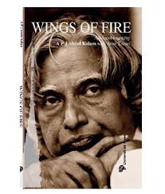
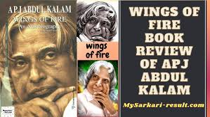

The book begins with the childhood of Kalam's life. In the beginning, he introduces us to his family and tries to familiarize us with his birthplace Rameswaram. In the childhood, he was a great admirer of his father, Jainulabdeen. He was a man of great wisdom and kindness, and Pakshi Lakshmana Sastry, a close friend of his father and the head priest of the Rameswaram Temple. He had an ideal helpmate in his mother, Ashiamma. He was also influenced by his close friend, Ahmed Jallaluddin; he was about 15 years older than Kalam. With his friend, he talked about spiritual matters. This shows that he believed in spirituality and also believed in God or Khudah. He always went to Lord Shiva's temple with his friends.
The later part of the opening chapters, he introduces his cousin Samsuddin, his school teachers and all the people who were felt any difference amongst them. Here he expresses one event, which happened in his school days, "Rameswaram Sastry, a new teacher of his school he could not stomach a Hindu Priest's son sitting with a Muslim boy. In accordance with our social ranking as the new teacher saw it, I was asked to go and sit on the back bench. I felt very sad, and so did my parents about the incident. Lakshmana Sastry summoned the teacher, and in our presence, told the teacher that he should not spread the poison of social inequality and communal intolerance in the minds of innocent children".
He completed his school education in the Rameswaram Elementary School and Schwartz High School, Rameswaram. In 1950, he joined St. Joseph's College Trichi, to study for the B.Sc degree course when he realized that physics was not his subject. Then, at last, he applied in Madras Institute of Technology, [MIT]. He or his family could not afford to spend that much of money for the course at MIT. Zohara, his sister stood with him. When he had in a specific branch of aeronautical engineering, the goal was very clear in his mind at that time. And he tried to communicate with different kinds of people. At MIT, their teachers shaped his thoughts, Prof. Sponder, Prof. Kal Pandalai and Prof. Narasingalu Rao. Each of them had carried distinct personalities. Last year MIT was a year of transition and had a great impact on his later life. From MIT, he went out to Hindustan Aeronautics Limited, [HAL], at Bangalore as a trainer. There he worked on engine overhauling as part of a team. He had trained in radial engine-cum- drum operations. After the completion of engineering, he had applied for the Air Force and Directorate of Technical Development and Production –DTP and PC (Air) of the Ministry of Defence. But he was not selected in Air Force because he failed to pass the physical fitness standards. Later, he was appointed in DTP and PC (Air) as senior scientific Assistant on basic salary only of Rs. 250 per month, in 1950. He had to create opportunities on his own. At the stage, he covered 32 eventful years of his life when he was just on the threshold of his career after graduation.

Written By Dr.A.P.J.Abdul Kalam

Autobiography of Dr.A.P.J.Abdul Kalam